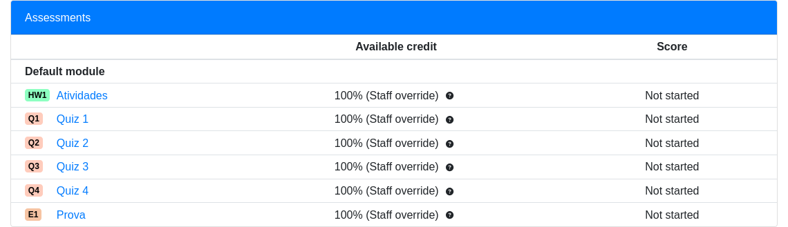

Lab 1 - Conceitos Básicos
Todas as nossas atividades serão feitas no PrairieLearn. Se não entrou ainda, volte no item Infra e entre no curso correto. Seguiremos todos os labs no item "Atividades". Todos os arquivos necessários já estão por lá e basta clicar no botão "Open Workspace" para usar uma versão online do VSCode.

Testando 1
Abra o terminal do VSCode online dentro da pasta 01-intro (clique com o botão direito na pasta e selecione Open in Integrated Terminal) e execute o comando: make tarefa1, se tudo der certo, o programa carrega a imagem: deepak-kumar-rX9uFci3pfY-unsplash.pgm e gera a imagem image-out.pgm.
Para abrir as imagens basta clicar duas vezes nelas. Uma nova aba do VSCode será aberta e você pode comparar visualmente os resultados.
Verifique se a imagem foi gerada corretamente.
Começando
Não é fácil prever o quanto a linguagem C será uma novidade para vocês. Por um lado, a sintaxe é muito parecida com Java. Por outro lado, existem diferenças importantes e vocês estão longe de Java há mais ou menos meio semestre...
Vamos começar com a revisão de alguns conceitos bem básicos. Dê uma olhada no arquivo main.c:
#define IMG_IN "deepak-kumar-rX9uFci3pfY-unsplash.pgm"
#define IMG_OUT "image-out.pgm"
// Esta função NÃO está no main.c mas,
// ela estará nos arquivos tarefaX.c.
// Por enquanto, suponha que ela está
// aqui para acompanhar a explicação.
// Também omitimos algumas linhas que
// não são importantes para esta parte.
int process_pixel(int level) {
int new_level;
new_level = level;
return new_level;
}
int main(int argc, char *argv[]) {
PGMData image;
readPGM(IMG_IN, &image);
for (int x=0; x< image.row; x++){
for (int y=0; y<image.col; y++){
image.matrix[x][y] = process_pixel(image.matrix[x][y]);
}
}
writePGM(IMG_OUT, &image);
}
Note que existem duas funções: main e process_pixel. A primeira é a função
que será sempre executada primeiro e a process_pixel é executada para cada
pixel da imagem de entrada (o gatinho).
Neste lab iremos praticar e modificar a função process_pixel. Essa função é trivial, mas no código já vemos vários conceitos importantes:
-
as instruções terminam em ponto e vírgula, como em Java;
-
new_levelé uma variável da função e precisa ser declarada para poder ser usada, como em Java; -
valores e variáveis possuem tipo, pois C é uma linguagem com tipagem mais forte, como Java;
-
a declaração de uma variável segue a sintaxe
tipo nome, como em Java; -
inté o tipo que representa números inteiros, como em Java; -
como tipagem mais forte significa que tudo, sem exceção, tem tipo,
inttambém aparece antes da declaração do parâmetrolevel, indicando que esse parâmetro é um número inteiro, e antes do próprio nome da função, indicando queprocess_pixeldevolve um número inteiro; -
essa devolução, aliás, é feita através da instrução
return, como em Python e Java; -
também em comum com Python e Java, temos o operador
=de atribuição.
Na verdade, soa um pouco injusto ficar dizendo "como em Java" e "como em Python", pois na verdade C veio antes de ambas!
Enfim, mesmo com a ferrugem pós-férias, vocês já devem ter percebido que essa
fantástica função faz... nada de útil. Ela apenas copia o valor do parâmetro
level para a variável new_level e devolve o valor de new_level. Em outras
palavras, apenas devolve o valor original de level, sem fazer nenhum tipo de
processamento. Yay!
Vejamos o contexto no qual essa função está sendo chamada.
for (int x=0; x< image.row; x++) {
for (int y=0; y<image.col; y++) {
image.matrix[x][y] = process_pixel(image.matrix[x][y]);
}
}
Hoje vocês não precisam saber todos os detalhes desse código (isso acontecerá na
primeira aula de quarta), apenas que esses loops substituem o valor original de
cada pixel da imagem pelo resultado devolvido por process_pixel, calculado a
partir desse valor original.
Como acabamos de ver que a função simplesmente devolve o mesmo valor, então a imagem permanece inalterada. Vamos fazer algo mais interessante?
Exercise 1
Answer
Em C possúimos alguns tipos de varíaveis, como:
| tipo | alternativa | range |
|---|---|---|
| char | int8_t | -128 .. 127 ou 0 .. 255 |
| unsigned char | uint8_t | 0 .. 255 |
| int | int32_t | -2.147.483.648 .. +2.147.483.648 |
| uint | uint32_t | 0 .. 4.294.967.295 |
Para mais informações acesse: https://www.tutorialspoint.com/cprogramming/c_data_types.htm
Exercícios Básicos
Para todos os exercícios deste handout, sigam por favor as regras abaixo.
-
Todos os enunciados dizem "o que" a função deve fazer, mas não dizem "como" ela deve fazer. Essa restrição é proposital! Não pergunte "como", pois descobrir isso é justamente uma das habilidades que vocês precisam exercitar para as três disciplinas.
-
Ao terminar um exercício, chame um dos professores para testemunhar o programa funcionando e validar o código. Não avance no guia até fazer isso, para termos certeza que você está passando por todo o processo.
(se os professores estiverem muito sobrecarregados, você pode validar com um colega que já foi validado)
Lembrete: Para cada questão, validar a resposta com a imagem referência antes de continuar.
Warning
Os exercícios abaixo deverão ser feitos nos arquivos tarefaX.c.
Exercise 2
Exercise 3
Antes do próximo exercício, uma dica! A sintaxe de if/else em C, para variar,
é como em Java. Ou seja:
if(condição) {
instrução
instrução
...
} else {
instrução
instrução
...
}
Sabendo disso...
Exercise 4
Exercise 5
Exercise 6
Nesses exercícios preliminares, vocês já usaram os operadores aritméticos
básicos (+, -, /, *), execução condicional (if/else) e a estrutura
básica de funções.
Exercícios Intermediários
Vamos agora sair do make por alguns instantes e fazer os próximos exercícios
"no papel", ou seja, sem ficar dependendo de rodar para ver se seu código faz
sentido. É muito importante que, pelo menos nesse começo, você não fique
excessivamente dependente do computador e/ou da IDE. Saiba fazer pelo menos o
básico sozinho, pois isso faz muita diferença na produtividade.
Exercise 7
Answer
Podemos identificar no código os três problemas abaixo.
-
A variável
snão é inicializada. Em Java, o valor padrão de uma variávelinté0, mas em C essa garantia não existe! De fato, uma variável em C é inicializada com lixo de memória, ou seja, um valor baseado nos bits que já estavam escritos no pedaço de memória que foi reservado para a variável. Esses bits são totalmente imprevisíveis! -
Se a condição do
whileéi < 10, então o último valor deisomado asé9e não10. A soma está incompleta! -
A variável
ideveria ter sido inicializada com o valor1. A rigor, esse problema não torna o código incorreto, pois a soma de0é inócua, mas torna o código ineficiente, pois uma iteração é desperdiçada.
Exercise 8
Answer
Quando os dois parâmetros do operador / são inteiros, o resultado também é um
inteiro. Se a divisão não for exata, a parte fracionária é truncada. Isso
significa que o que deveria ser a soma de 0.5, 1, 1.5, 2, 2.5, etc. é
na verdade a soma de 0, 1, 1, 2, 2, etc.
Para resolver isso, precisamos primeiramente declarar s como double,
permitindo a essa variável representar números reais... adivinhem... como em
Java.
double s = 0;
int i;
i = 1;
while(i <= 10) {
s += i / 2;
i++;
}
Mas isso não é suficiente! Não adianta s poder armazenar reais se o que ela
recebe de / são inteiros. Precisamos também garantir que / devolve um real,
e isso acontece se pelo menos um dos dois números envolvidos na divisão é
reconhecido como real.
Existem duas maneiras simples de conseguir esse reconhecimento. O primeiro é
simplesmente substituir 2 por 2.0. A existência de uma parte fracionária,
mesmo sendo zero, simboliza que o número é real.
double s = 0;
int i;
i = 1;
while(i <= 10) {
s += i / 2.0;
i++;
}
O segundo é fazer um casting de i para double antes da divisão. Lembram do
conceito de casting? Significa pedir para o programa interpretar uma variável
como sendo de certo tipo.
double s = 0;
int i;
i = 1;
while(i <= 10) {
s += (double) i / 2;
i++;
}
Note que um casting de int para double é praticamente inócuo, mas no casting
de double para int perde-se a informação fracionária.